Code
set.seed(42)
y <- rnorm(100)
plot(1:100, y, type="l", xlab="i", ylab=expression(Y[i]), main="")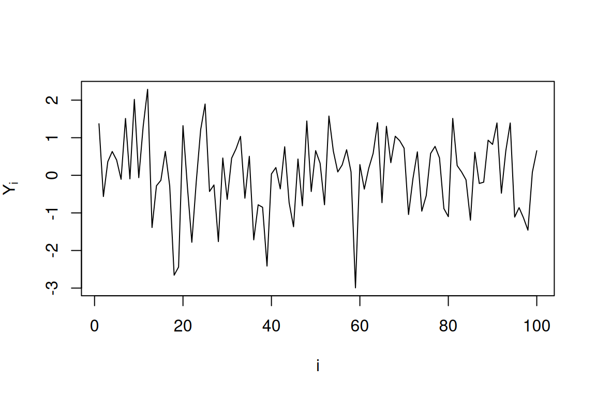
문제1. 다음 두 실험은 동일한 분포를 따르는가?
(a) 동일한 분포를 따른다 (b) 동일한 분포를 따르지 않는다
문제2. 다음 두 실험은 동일한 분포를 따르는가?
(a) 동일한 분포를 따른다 (b) 동일한 분포를 따르지 않는다
문제3. 다음 두 실험은 동일한 분포를 따르는가?
(a) 동일한 분포를 따른다 (b) 동일한 분포를 따르지 않는다
문제4. 다음 두 실험은 동일한 분포를 따르는가?
(a) 동일한 분포를 따른다 (b) 동일한 분포를 따르지 않는다
문제5. 다음 두 실험은 동일한 분포를 따르는가?
(a) 동일한 분포를 따른다 (b) 동일한 분포를 따르지 않는다
문제6. \(X \sim U(3, 5)\)이고 \(Y \sim U(0, 2)\)일 때, \(X - 3\)과 \(Y\)는 동일한 분포를 따르는가?
(a) 동일한 분포를 따른다 (b) 동일한 분포를 따르지 않는다
문제7. \(X \sim U(0, 1)\)이고 \(Y \sim U(0, 2)\)일 때, \(2X\)와 \(Y\)는 동일한 분포를 따르는가?
(a) 동일한 분포를 따른다 (b) 동일한 분포를 따르지 않는다
문제8. \(X \sim U(0, 1)\)이고 \(Y \sim U(0, 3)\)일 때, \(2X\)와 \(Y\)는 동일한 분포를 따르는가?
(a) 동일한 분포를 따른다 (b) 동일한 분포를 따르지 않는다
문제9. \(X \sim N(0, 1)\)이고 \(Y \sim N(5, 1)\)일 때, \(X + 5\)와 \(Y\)는 동일한 분포를 따르는가?
(a) 동일한 분포를 따른다 (b) 동일한 분포를 따르지 않는다
문제10. \(X \sim N(0, 1)\)이고 \(Y \sim N(0, 4)\)일 때, \(2X\)와 \(Y\)는 동일한 분포를 따르는가?
(a) 동일한 분포를 따른다 (b) 동일한 분포를 따르지 않는다
문제11. 다음 두 실험은 동일한 분포를 따르는가?
(a) 동일한 분포를 따른다 (b) 동일한 분포를 따르지 않는다
문제12. 다음 두 실험은 동일한 분포를 따르는가?
(a) 동일한 분포를 따른다 (b) 동일한 분포를 따르지 않는다
문제13. 다음 두 실험은 동일한 분포를 따르는가?
(a) 동일한 분포를 따른다 (b) 동일한 분포를 따르지 않는다
문제14. 다음 두 실험은 동일한 분포를 따르는가?
(a) 동일한 분포를 따른다 (b) 동일한 분포를 따르지 않는다
문제15. 다음 두 실험은 동일한 분포를 따르는가?
(a) 동일한 분포를 따른다 (b) 동일한 분포를 따르지 않는다
문제16. 공평한 동전을 2번 던져서 첫 번째에 앞면이면 \(X=1\), 뒷면이면 \(X=0\)으로 정의하고, 두 번째도 마찬가지로 \(Y\)를 정의할 때, \(X\)와 \(Y\)는 독립인가?
(a) 독립이다 (b) 독립이 아니다
문제17. 공평한 주사위를 1번 던져서 나온 눈을 \(X\)라 하고, \(Y = 7 - X\)라 할 때, \(X\)와 \(Y\)는 독립인가?
(a) 독립이다 (b) 독립이 아니다
문제18. 흰공 3개와 검은공 2개가 들어있는 주머니에서 공을 하나 꺼내고 다시 넣은 후 또 하나를 꺼낸다. 첫 번째에 흰공이 나오면 \(X=1\), 검은공이 나오면 \(X=0\)으로 정의하고, 두 번째도 마찬가지로 \(Y\)를 정의할 때, \(X\)와 \(Y\)는 독립인가?
(a) 독립이다 (b) 독립이 아니다
문제19. 흰공 3개와 검은공 2개가 들어있는 주머니에서 공을 하나 꺼내고 다시 넣지 않은 채 또 하나를 꺼낸다. 첫 번째에 흰공이 나오면 \(X=1\), 검은공이 나오면 \(X=0\)으로 정의하고, 두 번째도 마찬가지로 \(Y\)를 정의할 때, \(X\)와 \(Y\)는 독립인가?
(a) 독립이다 (b) 독립이 아니다
문제20. 서울의 오늘 기온을 \(X\), 부산의 오늘 기온을 \(Y\)라 할 때, \(X\)와 \(Y\)는 독립이라고 가정하는 것이 합리적인가?
(a) 독립이라고 가정하는 것이 합리적이다 (b) 독립이 아니라고 가정하는 것이 합리적이다
문제21. \(X \sim Bernoulli(0.5)\)일 때, \(P(X=0) + P(X=1) = 1\)이다. (O/X)
문제22. 이산형 확률변수의 경우 확률분포표를 알면 해당 확률변수의 분포를 완전히 특정할 수 있다. (O/X)
문제23. \(X \sim Bernoulli(0.3)\)일 때, \(P(X=1) = 0.3\)이고 \(P(X=0) = 0.3\)이다. (O/X)
문제24. 확률질량함수(pmf)는 이산형 확률변수에 대해 정의된다. (O/X)
문제25. 확률밀도함수(pdf)는 연속형 확률변수에 대해 정의된다. (O/X)
문제26. \(X \sim N(0,1)\)일 때, \(P(X=0) = 0\)이다. (O/X)
문제27. 히스토그램에서 샘플 수를 무한히 늘리면 이산형 확률변수의 경우 확률질량함수(pmf)의 모양에 가까워진다. (O/X)
문제28. 히스토그램에서 샘플 수를 무한히 늘리면 연속형 확률변수의 경우 확률밀도함수(pdf)의 모양에 가까워진다. (O/X)
문제29. \(X \sim Bernoulli(\theta)\)일 때, 확률분포표는 \(\theta\) 값에 따라 달라진다. (O/X)
문제30. 연속형 확률변수 \(X \sim N(0,1)\)에 대해 확률분포표를 만들 수 있다. (O/X)
문제31. 확률분포 \(P\)는 데이터를 만들어내는 규칙을 의미한다. (O/X)
문제32. 확률분포표는 확률변수 \(X\)가 가질 수 있는 값의 범위(support)도 정의한다. (O/X)
문제33. 베르누이분포를 특정하기 위해서는 2개의 모수가 필요하다. (O/X)
문제34. 이항분포 \(Binomial(n, p)\)는 2개의 모수 \(n\)과 \(p\)를 가진다. (O/X)
문제35. 베르누이분포는 \(n=1\)인 이항분포라고 할 수 있다. (O/X)
문제36. 같은 이름의 분포이고 같은 모수값을 가진다면 분포는 하나로 특정된다. (O/X)
문제37. \(X_1, X_2 \overset{iid}{\sim} Bernoulli(0.5)\)이고 \(Y \sim Binomial(2, 0.5)\)일 때, \(X_1 + X_2 \overset{d}{=} Y\)이다. (O/X)
문제38. 아래 그림은 \(Y_1, Y_2, \ldots, Y_{100}\)을 생성하여 \((i, Y_i)\)를 선으로 연결한 것이다. \(Y_i\)들은 서로 독립인가?
set.seed(42)
y <- rnorm(100)
plot(1:100, y, type="l", xlab="i", ylab=expression(Y[i]), main="")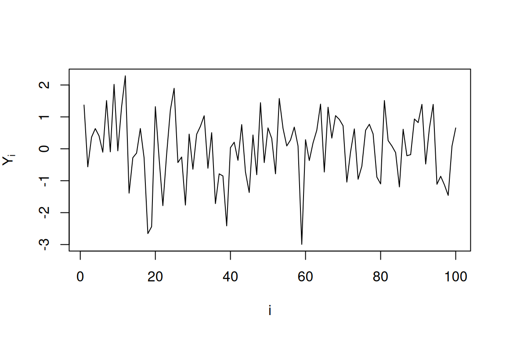
(a) 독립이다 (b) 독립이 아니다
문제39. 아래 그림은 \(Y_1, Y_2, \ldots, Y_{100}\)을 생성하여 \((i, Y_i)\)를 선으로 연결한 것이다. \(Y_i\)들은 서로 독립인가?
set.seed(42)
y <- cumsum(rnorm(100))
plot(1:100, y, type="l", xlab="i", ylab=expression(Y[i]), main="")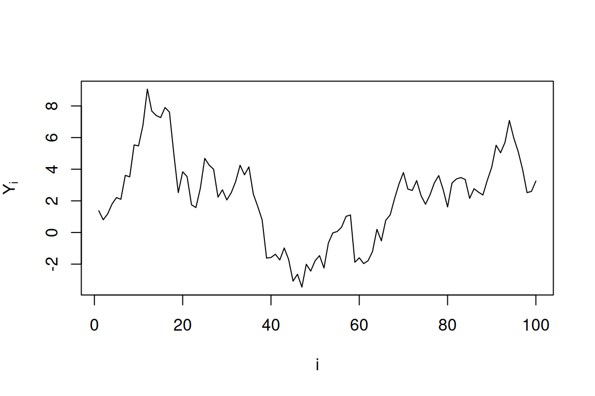
(a) 독립이다 (b) 독립이 아니다
문제40. 아래 산점도는 \((X_i, Y_i)\), \(i=1,\ldots,200\)을 나타낸 것이다. \(X_i\)와 \(Y_i\)는 독립인가?
set.seed(123)
x <- runif(200)
y <- runif(200)
plot(x, y, xlab="X", ylab="Y", pch=19, cex=0.7)
(a) 독립이다 (b) 독립이 아니다
문제41. 아래 산점도는 \((X_i, Y_i)\), \(i=1,\ldots,200\)을 나타낸 것이다. \(X_i\)와 \(Y_i\)는 독립인가?
set.seed(123)
library(MASS)
Sigma <- matrix(c(1, 0.9, 0.9, 1), 2, 2)
data <- mvrnorm(200, mu=c(0,0), Sigma=Sigma)
plot(data[,1], data[,2], xlab="X", ylab="Y", pch=19, cex=0.7)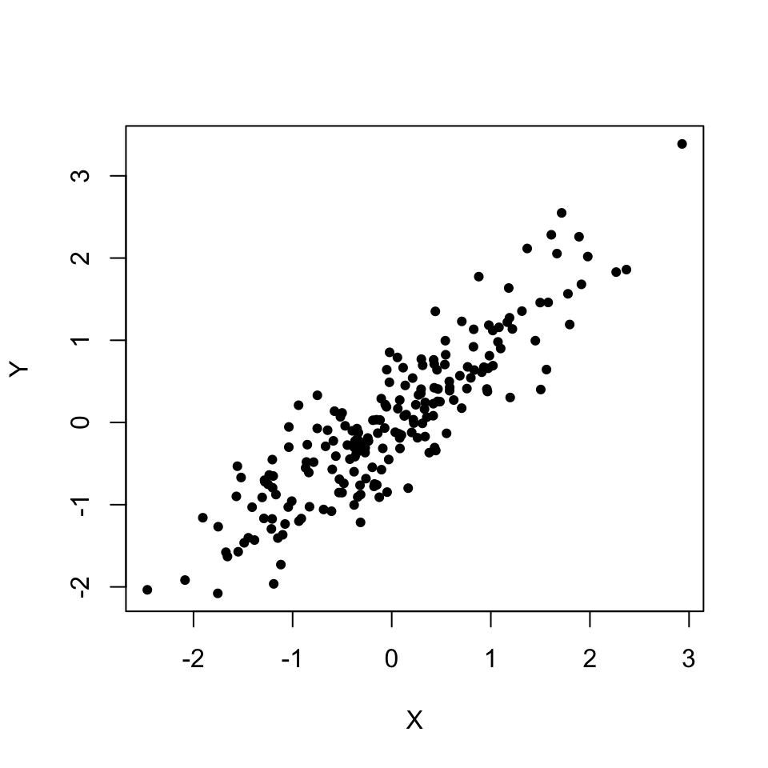
(a) 독립이다 (b) 독립이 아니다
문제42. 아래 산점도는 \((X_i, Y_i)\), \(i=1,\ldots,200\)을 나타낸 것이다. \(X_i\)와 \(Y_i\)는 독립인가?
set.seed(123)
theta <- runif(200, 0, 2*pi)
r <- 1 + rnorm(200, 0, 0.1)
x <- r * cos(theta)
y <- r * sin(theta)
plot(x, y, xlab="X", ylab="Y", pch=19, cex=0.7, asp=1)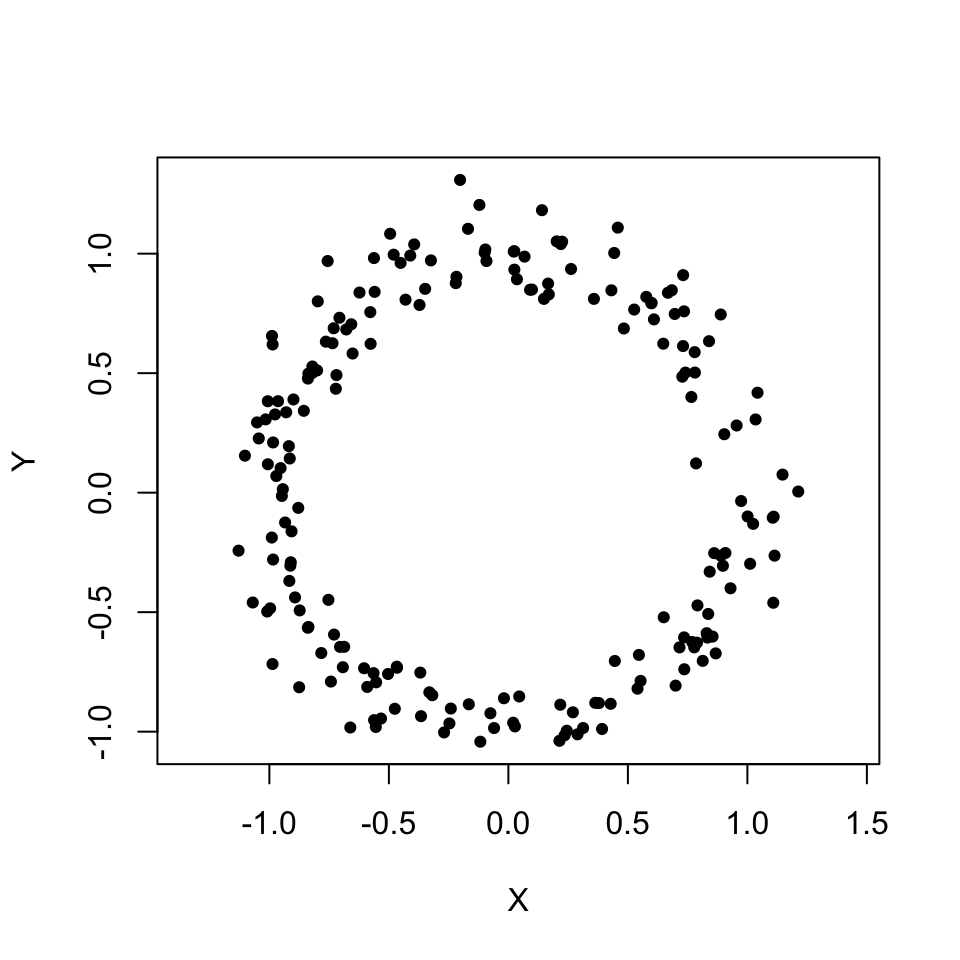
(a) 독립이다 (b) 독립이 아니다
문제43. 아래 산점도는 \((X_i, Y_i)\), \(i=1,\ldots,200\)을 나타낸 것이다. \(X_i\)와 \(Y_i\)는 독립인가?
set.seed(456)
x <- rnorm(200)
y <- x^2 + rnorm(200, 0, 0.3)
plot(x, y, xlab="X", ylab="Y", pch=19, cex=0.7)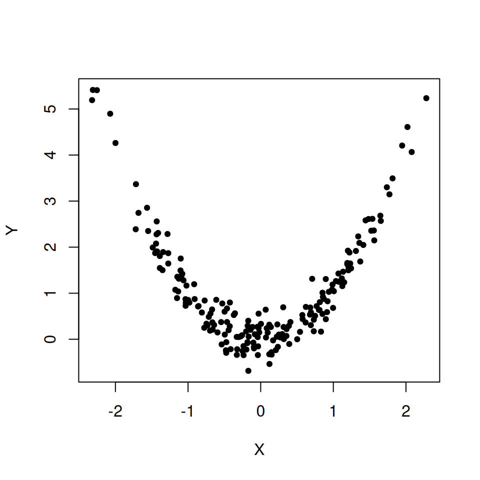
(a) 독립이다 (b) 독립이 아니다
문제44. 아래 그림은 \(Y_1, Y_2, \ldots, Y_{100}\)을 생성하여 \((i, Y_i)\)를 선으로 연결한 것이다. \(Y_i\)들은 서로 독립인가?
set.seed(789)
y <- sin(1:100 / 5) + rnorm(100, 0, 0.2)
plot(1:100, y, type="l", xlab="i", ylab=expression(Y[i]), main="")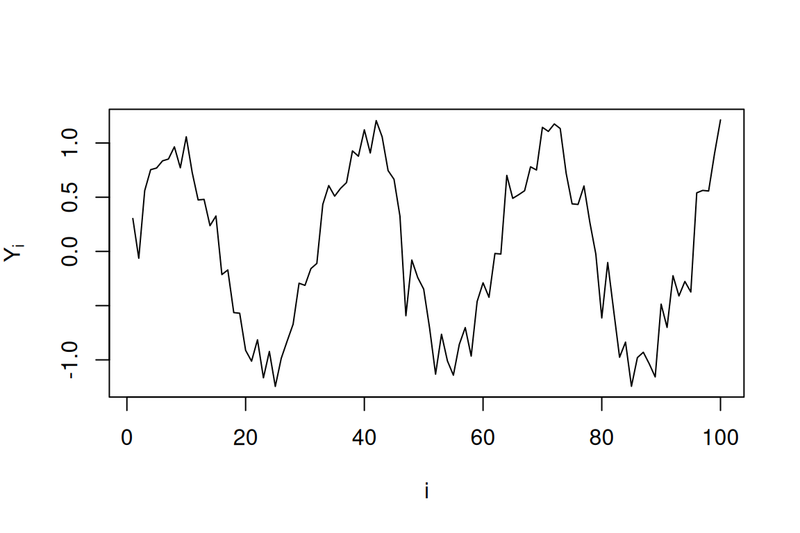
(a) 독립이다 (b) 독립이 아니다
문제45. 아래 산점도는 \((X_i, Y_i)\), \(i=1,\ldots,200\)을 나타낸 것이다. \(X_i\)와 \(Y_i\)는 독립인가?
set.seed(111)
library(MASS)
Sigma <- matrix(c(1, -0.85, -0.85, 1), 2, 2)
data <- mvrnorm(200, mu=c(0,0), Sigma=Sigma)
plot(data[,1], data[,2], xlab="X", ylab="Y", pch=19, cex=0.7)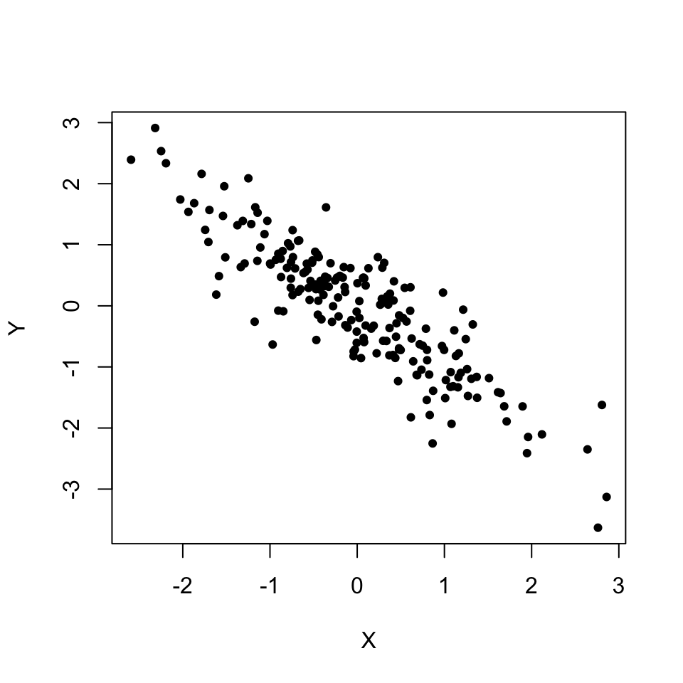
(a) 독립이다 (b) 독립이 아니다
문제46. 아래 그림은 \(Y_1, Y_2, \ldots, Y_{100}\)을 생성하여 \((i, Y_i)\)를 선으로 연결한 것이다. \(Y_i\)들은 서로 독립인가?
set.seed(222)
y <- arima.sim(model=list(ar=0.8), n=100)
plot(1:100, y, type="l", xlab="i", ylab=expression(Y[i]), main="")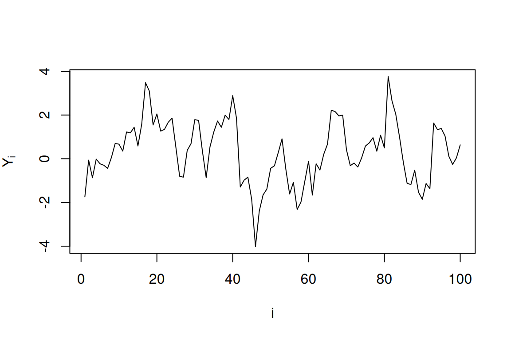
(a) 독립이다 (b) 독립이 아니다
문제47. 아래 산점도는 \((X_i, Y_i)\), \(i=1,\ldots,300\)을 나타낸 것이다. \(X_i\)와 \(Y_i\)는 독립인가?
set.seed(333)
x <- rnorm(300)
y <- rnorm(300)
plot(x, y, xlab="X", ylab="Y", pch=19, cex=0.5)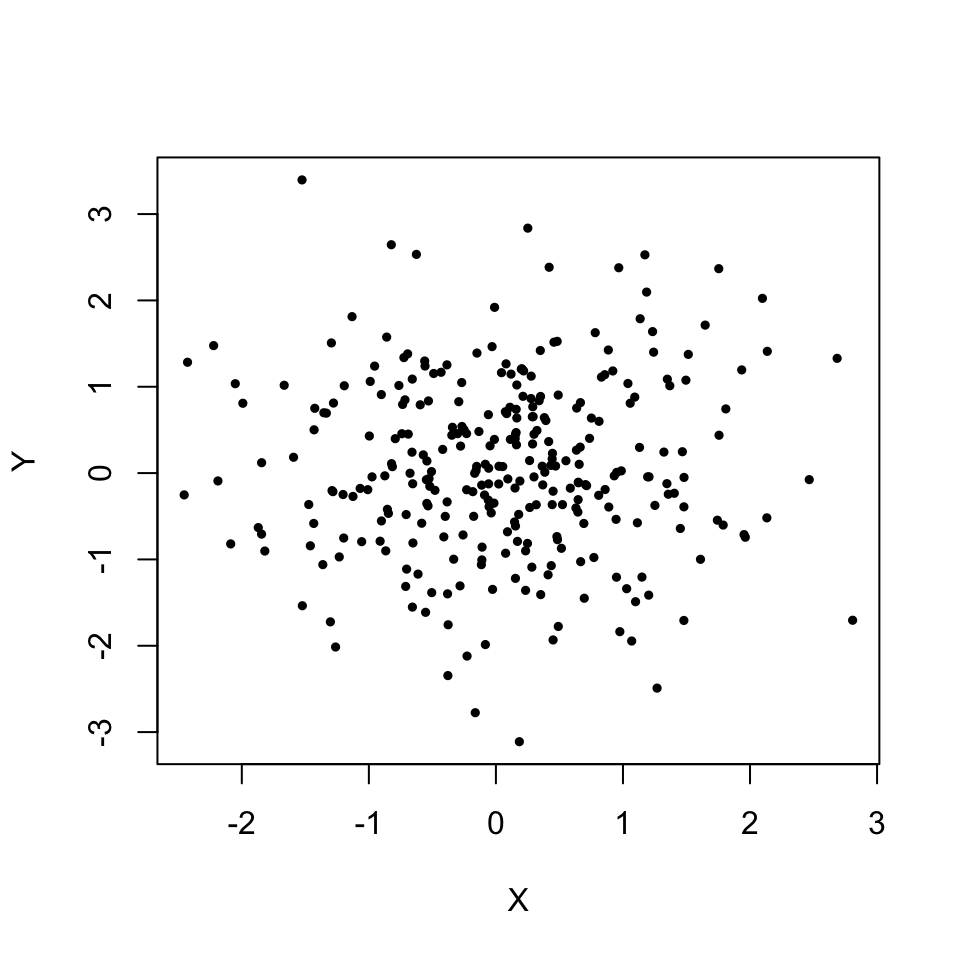
(a) 독립이다 (b) 독립이 아니다
문제48. 아래 산점도는 \((X_i, Y_i)\), \(i=1,\ldots,200\)을 나타낸 것이다. \(X_i\)와 \(Y_i\)는 독립인가?
set.seed(444)
x <- c(rnorm(100, -2, 0.5), rnorm(100, 2, 0.5))
y <- c(rnorm(100, 2, 0.5), rnorm(100, -2, 0.5))
plot(x, y, xlab="X", ylab="Y", pch=19, cex=0.7)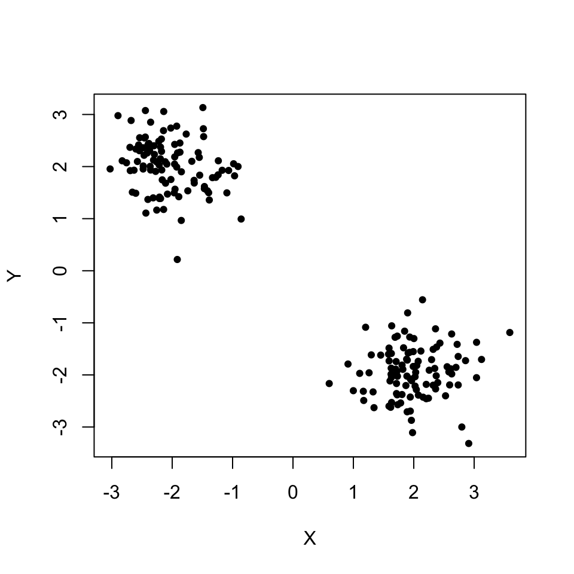
(a) 독립이다 (b) 독립이 아니다
문제49. 아래 산점도는 \((X_i, Y_i)\), \(i=1,\ldots,200\)을 나타낸 것이다. \(X_i\)와 \(Y_i\)는 독립인가?
set.seed(555)
x <- rexp(200, rate=1)
y <- rexp(200, rate=1)
plot(x, y, xlab="X", ylab="Y", pch=19, cex=0.7)
(a) 독립이다 (b) 독립이 아니다
문제50. 아래 산점도는 \((X_i, Y_i)\), \(i=1,\ldots,200\)을 나타낸 것이다. \(X_i\)와 \(Y_i\)는 독립인가?
set.seed(666)
x <- rbinom(200, 10, 0.5)
y <- rbinom(200, 10, 0.5)
plot(jitter(x), jitter(y), xlab="X", ylab="Y", pch=19, cex=0.7)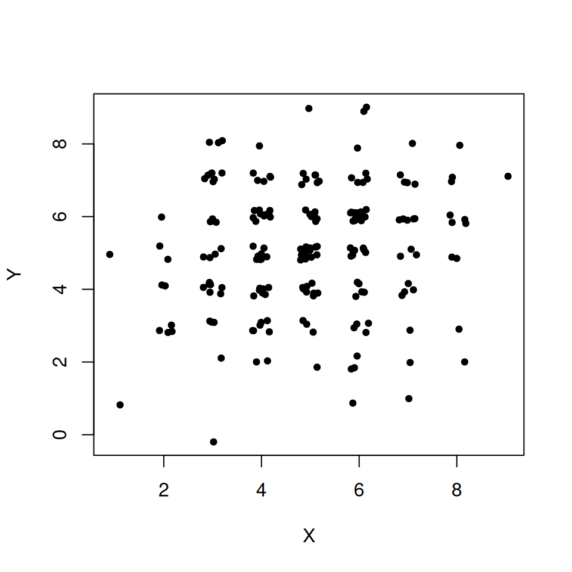
(a) 독립이다 (b) 독립이 아니다